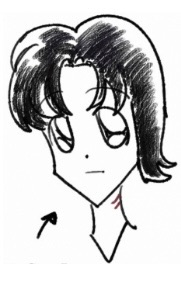
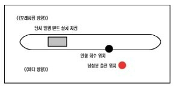

15년 전에 해수욕장에서 초등학교 고학년 여아에게 곰돌이 인형을 찾아주신 장발의 남성 분을 찾습니다.
신원을 묻는 질문에 대답하지 않으며, 무엇을 하냐 물었더니 '중요한 사람을 찾고 있다'고 말한 후에 바다로 들어가 사라졌습니다.
???
사용 중인 브라우저는 오디오를 지원하지 않습니다.당시 남성분 인상착의:
뒷목까지 덮이는 긴 흑색 머리
세로방향 목 흉터 (아가미 모양)
인상이 유순하고 아주 마름
수영에 매우 뛰어남
흰색 긴소매 상의
